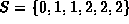
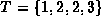
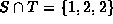
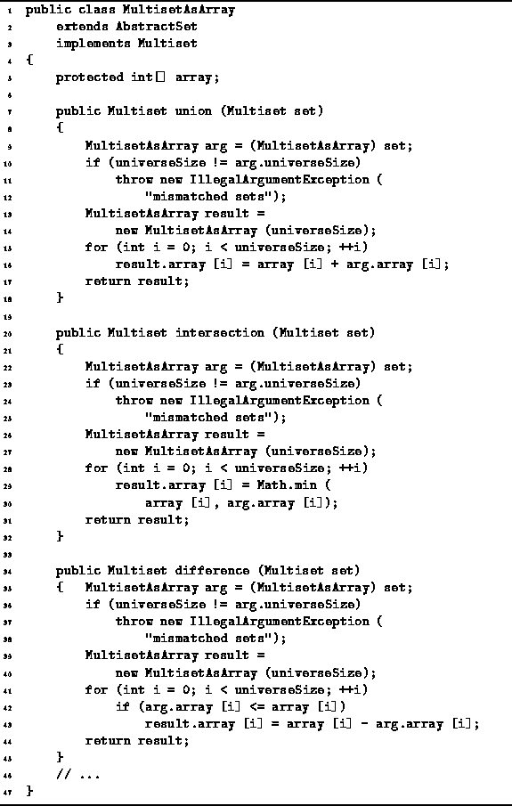

Data Structures and Algorithms
with Object-Oriented Design Patterns in Java
Data Structures and Algorithms
with Object-Oriented Design Patterns in JavaBecause multisets permit duplicates but sets do not, the definitions of union, intersection, and difference are slightly modified for multisets. The union of multisets S and T, written , is the multiset comprised of all the elements of S together with all the element of T. Since a multiset may contain duplicates, it does not matter if the same element appears in S and T.
The subtle difference between union of sets and union of multisets gives rise to an interesting and useful property. If S and T are regular sets,
On the other hand, if S and T are multisets,
The intersection of sets S and T is written . The elements of are those items which are elements of both S and T. If a given element appears more than once in S or T (or both), the intersection contains m copies of that element, where m is the smaller of the number of times the element appears in S or T. For example, if  and , the intersection is .
The difference of sets S and T, written S-T, contains those elements of S which are not also elements of T. That is, the result S-T is obtained by taking the set S and removing from it those elements which are also found in T.
Program  gives the
implementations of the union, intersection, and difference methods
of MultisetAsArray class.
This code is quite similar to that of
the SetAsArray class (Program )
and the SetAsBitVector class (Program ).
The worst-case running time of each of these operations is O(N).
gives the
implementations of the union, intersection, and difference methods
of MultisetAsArray class.
This code is quite similar to that of
the SetAsArray class (Program )
and the SetAsBitVector class (Program ).
The worst-case running time of each of these operations is O(N).

Program: MultisetAsArray class union, intersection and difference methods.
Instead of using the boolean operators &&, ||, and !, we have used + (integer addition), Math.min and - (integer subtraction). The following table summarizes the operators used in the various set and multiset implementations.
| class | |||
|
operation | SetAsArray | SetAsBitVector | MultisetAsArray |
| union | || | | | + |
| intersection | && | & | Math.min |
| difference | && and ! | & and | <= and - |
 Copyright © 1998 by Bruno R. Preiss, P.Eng. All rights reserved.
Copyright © 1998 by Bruno R. Preiss, P.Eng. All rights reserved.